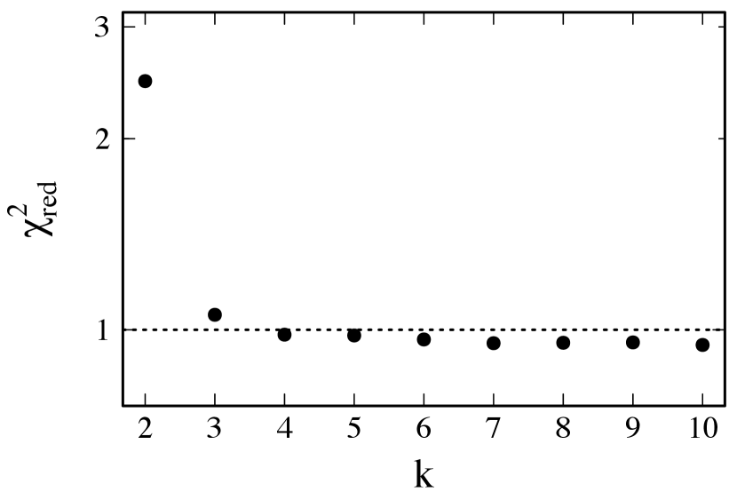
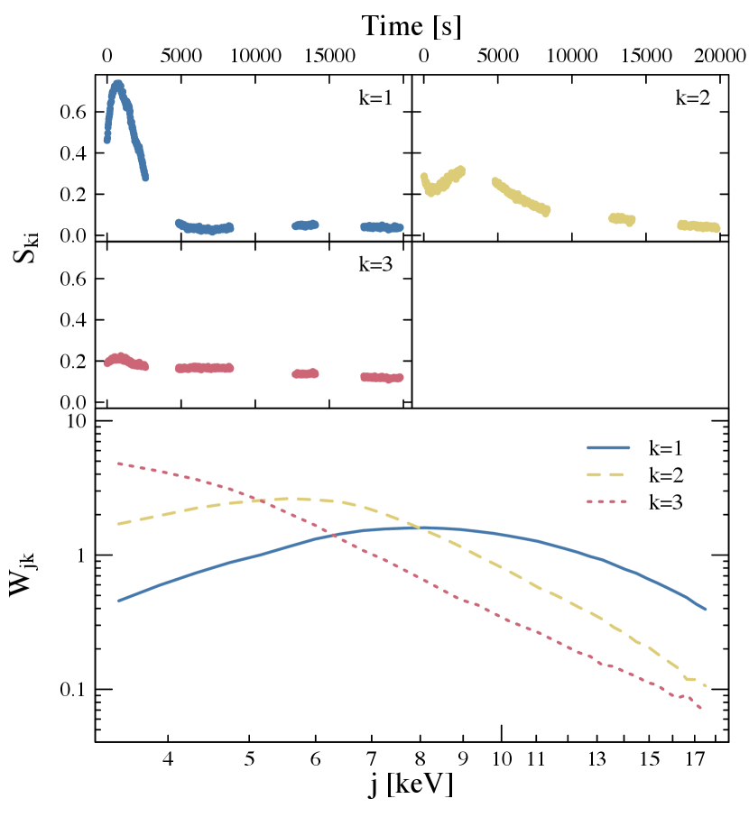
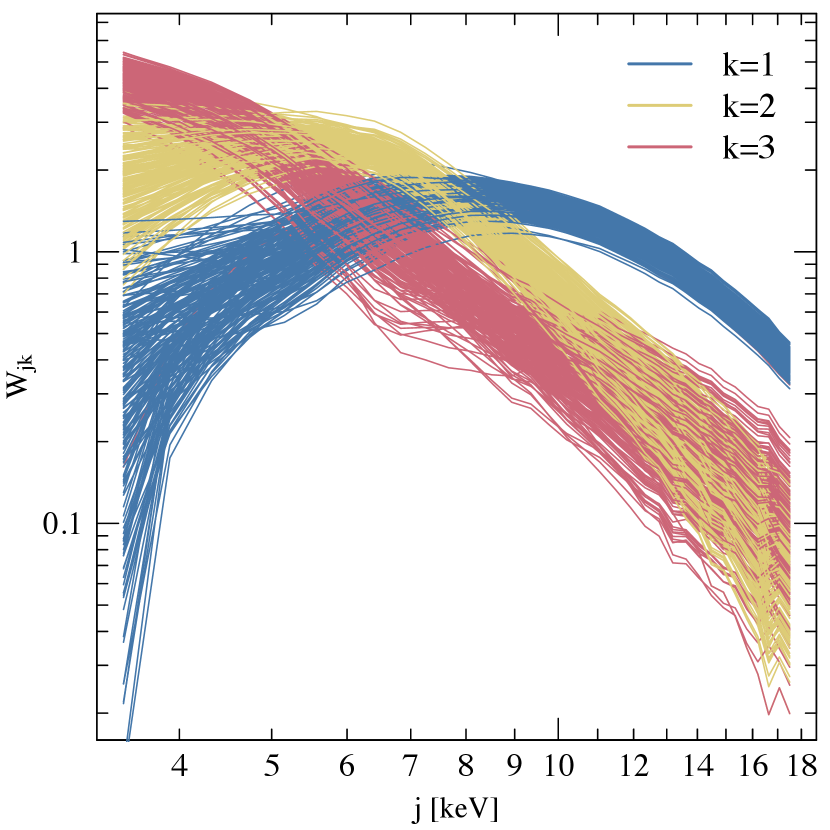
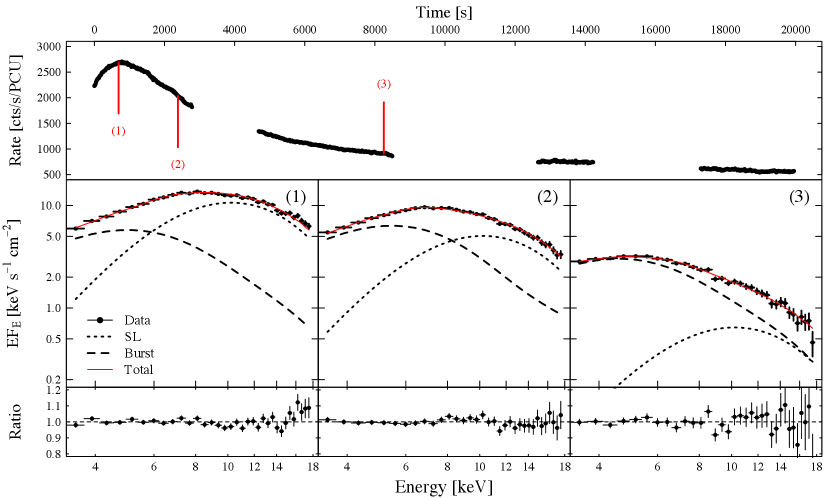
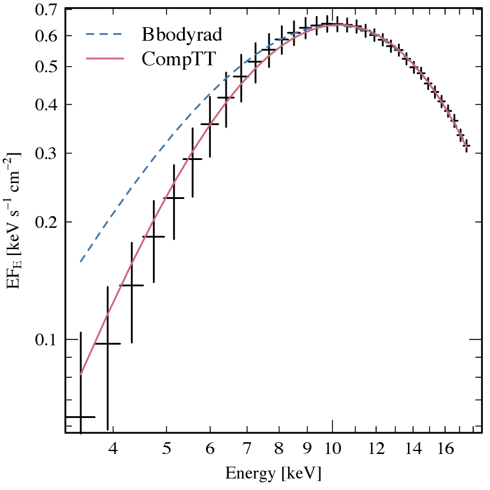
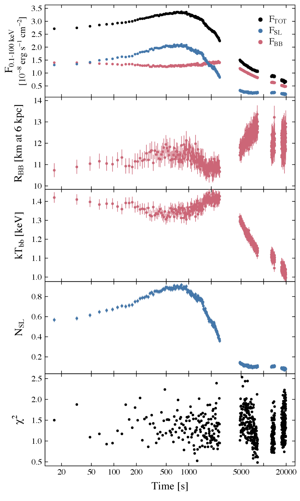
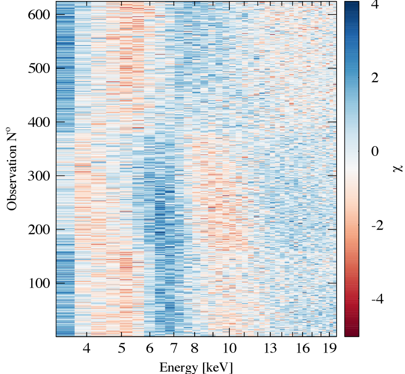
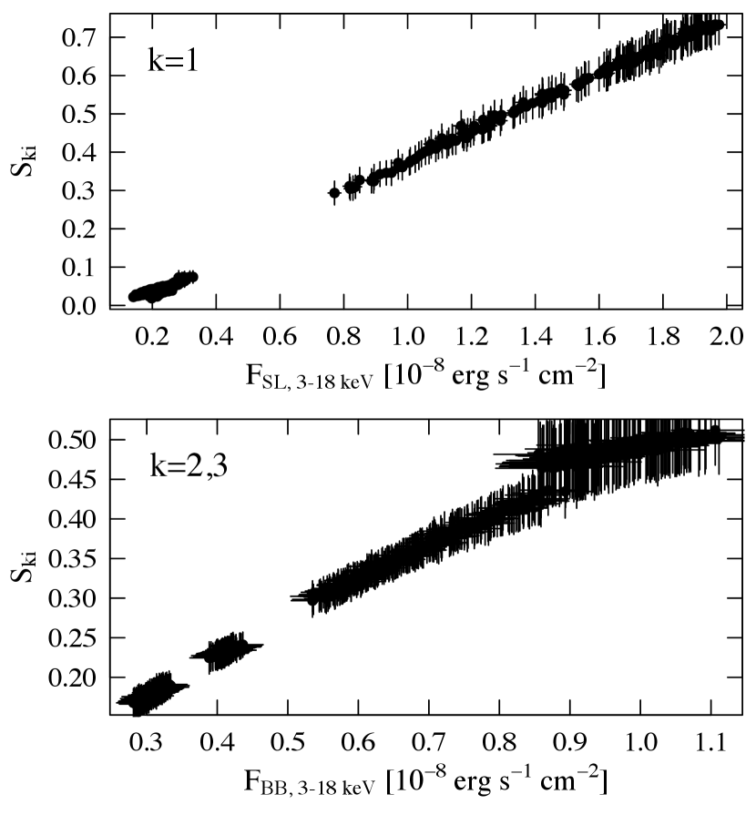

دليل على انبعاث طبقة الانتشار في اندلاع نووي حراري فائق
الملخص
عندما يراكم نجم نيوتروني مادة من نجم مرافق في ثنائي أشعة X منخفض الكتلة، يستقر الغاز المتراكم على سطح النجم عبر طبقة حدية/طبقة انتشار. وفي مناسبات نادرة يخضع الغاز المتراكم لاندلاع نووي حراري فائق قوي تغذيه عملية احتراق الكربون في أعماق أسفل غلاف النجم النيوتروني. في هذه الورقة، نطبق تقنية تفكيك الأطياف بتفكيك المصفوفات غير السالبة لنبيّن أن التغيرات الطيفية أثناء اندلاع فائق من 4U 1636–536 يمكن تفسيرها بمركبتين متميزتين: 1) انبعاث الاندلاع الفائق، ويميزه مكوّن إشعاع جسم أسود ذي درجة حرارة متغيرة، و2) مكوّن شبه بلانكي ذي درجة حرارة ثابتة قدرها 2.5 keV، ويتغير تدفقه بعامل قدره 15. إن طيف المكوّن شبه البلانكي مطابق في الشكل والخصائص للأطياف المحللة ترددياً المرصودة في طيف التراكم/الطيف المستمر لثنائيات أشعة X منخفضة الكتلة ذات النجوم النيوترونية، كما يتفق جيداً مع تنبؤات نموذج طبقة الانتشار الذي قدّمه Inogamov & Sunyaev (1999). وتوفر نتيجتنا دليلاً رصدياً إضافياً على أن الاندلاعات الفائقة – وربما اندلاعات أشعة X العادية أيضاً – تُحدث تغيرات في الحد الفاصل بين القرص والنجم.
Subject headings:
التراكم، أقراص التراكم – الأشعة السينية: الاندلاعات – النجوم: النيوترونية1. المقدمة
النجوم منخفضة الكتلة في المنظومات الثنائية المتفاعلة التي تضم نجماً نيوترونياً (NS) هي النوع الأكثر شيوعاً بين ثنائيات أشعة X منخفضة الكتلة (LMXB; انظر مثلاً Tauris & van den Heuvel, 2006; Done et al., 2007, للمراجعة). وتتراكم الكتلة التي يفقدها النجم منخفض الكتلة على سطح NS عبر قرص تراكم. لكي تتباطأ المادة من دوران القرص الكبلري إلى الحركة الدورانية الأبطأ لـ NS، لا بد أن تتشكل طبقة حدية بين قرص التراكم وسطح NS. إن إطلاق الطاقة في هذه العملية كبير، وقد يكون الإشعاع الناتج من الطبقة الحدية أشد لمعاناً من الإشعاع الصادر عن قرص التراكم (Sunyaev & Shakura, 1986). لا تزال الخصائص الفيزيائية والهندسة وآليات الإشعاع لهذه الطبقات الحدية غير معروفة جيداً في الوقت الحاضر. وعلاوة على ذلك، يمكن أن تختلف خصائص الطبقة الحدية وآلية إشعاعها تبعاً لحالة التراكم في NS-LMXB. في الحالة الطيفية الصلبة (“الجزيرة”) قد يُقتطع قرص التراكم السميك بصرياً إلى أنصاف أقطار أكبر (Done et al., 2007)، ويتصل الجريان الداخلي الساخن الرقيق بصرياً اتصالاً سلساً بـ NS عبر طبقة حدية رقيقة بصرياً (Deufel et al., 2001). وعندما يزداد معدل التراكم تتحرك الحافة الداخلية للقرص إلى الداخل وينهار/يتكثف الجريان الداخلي الساخن داخل القرص (مثلاً Meyer et al. 2007). ومع انتقال المصدر من الحالة الصلبة إلى الحالة الطيفية اللينة (“الموزة”)، تصبح الطبقة الحدية سميكة بصرياً بالنسبة إلى الكمتنة وتبرد، مسببة هبوطاً سريعاً في نسبة صلادة أشعة X (Done et al., 2007). تُعد هندستان متميزتان للطبقة الحدية ممكنتين: ففي نموذج الطبقة الحدية الكلاسيكي (ويشار إليه فيما يلي بـ BL) تنخفض السرعة الدورانية على امتداد نصف قطري كبير في المستوى الأوسط للقرص (مثلاً، Pringle 1977; Sunyaev & Shakura 1986; Popham & Sunyaev 2001)، أو في نموذج طبقة الانتشار البديل (ويشار إليه فيما يلي بـ SL) يكون الامتداد نصف القطري للطبقة أصغر، لكن الغاز ينتشر على ارتفاع معتبر من المستوى الاستوائي نحو خطوط عرض نجمية أعلى (مثلاً، Inogamov & Sunyaev 1999, 2010). تتنبأ حسابات النقل الإشعاعي لنموذج BL التي أجراها Grebenev & Sunyaev (2002) بأطياف أصلب مما يُرصد في NS-LMXBs في الحالة الطيفية اللينة، في حين تتنبأ حسابات نموذج SL التي أجراها Suleimanov & Poutanen (2006) بأطياف ألين شبه بلانكية ذات درجة حرارة لونية مقدارها – keV ما دام معدل التراكم () مرتفعاً بما يكفي ( 10 % من معدل تراكم إدنغتون). وتتفق تنبؤات نموذج SL جيداً مع القيم المرصودة في NS-LMXBs في الحالة الطيفية اللينة (مثلاً، Mitsuda et al. 1984; Lin et al. 2007).
قد تُظهر NS-LMXBs أثناء نوبات التراكم “اندلاعات فائقة”، وهي اندلاعات أشعة X نووية حرارية نادرة وطويلة على نحو غير معتاد (Cornelisse et al., 2000). تدوم الاندلاعات الفائقة عدة ساعات، في حين لا تدوم اندلاعات أشعة X من النوع I الأكثر شيوعاً بكثير (انظر Lewin et al. 1993 للمراجعة) إلا 10-100 ثانية. ويُعتقد أن هذا الفرق ينشأ من أنظمة احتراق مختلفة في غلاف NS. وتغذى اندلاعات أشعة X من النوع I باحتراق الهيليوم و/أو الهيدروجين في “محيط” NS، بينما تغذى الاندلاعات الفائقة باحتراق الكربون عند أعماق أكبر (Cumming & Bildsten, 2001). حتى الآن، لم يُرصد إلا عدد قليل من الاندلاعات الفائقة، ولا يوجد منها سوى اثنين يمتلكان بيانات عالية الجودة تغطي معظم الاندلاع: 4U 1636–536 (Strohmayer & Markwardt, 2002) و4U 1820–303 (Strohmayer & Brown, 2002). أثناء اندلاع نووي حراري يمكن لانبعاث أشعة X في NS-LMXBs أن ينشأ من ثلاث مناطق متميزة، كلها تشع تقريباً في نطاق الطاقة نفسه وبأشكال طيفية متشابهة: سطح NS المندلع بأشعة X، وBL/SL، وقرص تراكم. خلال اندلاع أشعة X يمكن أن يسخن سطح NS إلى 3 keV، مشعاً انبعاثاً شبيهاً بالجسم الأسود بدرجة حرارة قابلة للمقارنة مع درجة حرارة BL/SL. وإذا كان المصدر في الحالة الطيفية اللينة لأشعة X، فإن قرص التراكم يشع كجسم أسود متعدد الألوان بدرجة حرارة 1 keV، إضافة إلى عمله وسطاً عاكساً للانبعاث الصادر عن سطح NS المندلع وBL/SL (Ballantyne, 2004). ورصدياً، يكون طيف NS-LMXB النموذجي في الحالة اللينة و/أو أثناء اندلاع أشعة X أملس ومنحنياً، ويمكن ملاءمته بعدة نماذج تتضمن مكونات متعددة شبيهة بالجسم الأسود وبدرجات حرارة متغيرة. وغالباً ما تكون النماذج متكافئة بحيث لا يمكن ملاءمة أطياف المصدر على نحو لا لبس فيه بنموذج واحد، بل بمجموعة متنوعة من النماذج ذات جودة ملاءمة متقاربة (Lin et al., 2007). ومن ثم، يمكن أن يؤدي هذا الالتباس إلى تفسيرات فيزيائية مختلفة تماماً تبعاً لاختيار النموذج.
في السابق، جرت محاولات لتجاوز هذا الالتباس باستخدام معلومات إضافية من مجال التوقيت لتفكيك المكونات المؤلفة للأطياف الكلية: أولاً في Mitsuda et al. (1984)، ثم لاحقاً في Gilfanov et al. (2003) وRevnivtsev & Gilfanov (2006) وRevnivtsev et al. (2013). وباستخدام أطياف طاقة محللة ترددياً تمكنوا من إظهار أن تغيرات التدفق على مقاييس زمنية أقل من ثانية واحدة تنجم عن مكوّن طيفي ذي شكل طيفي ثابت يتغير في التطبيع. في جميع NS-LMXBs المدروسة، كان الشكل الطيفي لهذا المكوّن متشابهاً ويمثل الانبعاث من SL. تنشأ التباسات مشابهة عند نمذجة أطياف أشعة X للاندلاعات الفائقة. على سبيل المثال، استخدم Keek et al. (2014a, b, 2015) نماذج انعكاس، إضافة إلى طريقة الخلفية المتغيرة (Worpel et al., 2013; in ’t Zand et al., 2013)، في ملاءمة أطياف الاندلاع الفائق من 4U 1636–536. وقد لوحظ أن الانبعاث المستمر يتغير تغيراً كبيراً أثناء الاندلاع الفائق، وفُسّر ذلك بأنه ناجم عن زيادة في معدل تراكم الكتلة بسبب سحب Poynting-Robertson. وهنا ترك نهج النمذجة الطيفية التقليدي التباسات حول ما إذا كان الطيف المستمر قد تغير في التدفق فقط، أم أن شكله الطيفي المستمر كان متغيراً أيضاً أثناء الاندلاع الفائق.
في هذه الورقة، نوسع دراسات التفكيك الطيفي المذكورة أعلاه لتشمل اندلاعاً نووياً حرارياً فائقاً من 4U 1636–536، ونركز بدلاً من ذلك على التغير الزمني الأبطأ (16 s). وباستخدام طرائق التفكيك الطيفي الموصوفة في Koljonen (2015)، نبيّن أنه أثناء الاندلاع الفائق يمكن العثور على مكوّن مطابق لـ SL المرئية في الانبعاث المستمر، وهو يسهم بجزء معتبر من اللمعان الكلي. ويفسر الانبعاث المتطور بسلاسة من SL على نحو طبيعي منحنيات الضوء والتطور الطيفي للاندلاع الفائق.
2. الرصد والطرائق
استخدمنا بيانات من Proportional Counter Array (PCA; Jahoda et al. 2006) على متن Rossi X-ray Timing Explorer، أُخذت أثناء الاندلاع الفائق من 4U 1636–536 (Strohmayer & Markwardt, 2002) في 22 فبراير 2002. استخرجنا أطياف PCA القياسية 2 من معرفات الرصد 50030-02-08-01 و50030-02-08-02، في فواصل مقدارها 16 ثانية باستخدام heasoft 6.17. استخدمنا PCUs 0 و2 و3 ، لأنها كانت الوحيدة العاملة طوال الاندلاع الفائق، واستخرجنا الأطياف من طبقات الكاشف الثلاث كلها. صُححت أزمنة التعريض لتأثيرات الزمن الميت، و استخدمنا خلفية واحدة واستجابة واحدة لكل مدار، أنتجتهما الأداتان pcabackest وpcarsp على التوالي. قُيّدت الأطياف لتغطي المجال 3–18 keV لضمان قيم موجبة في جميع القنوات طوال الاندلاع الفائق من أجل إجراء التفكيك، لكننا استخدمنا للملاءمة الطيفية نطاقاً أعرض قليلاً قدره 3–20 keV. أُجريت الملاءمة باستخدام isis (Houck & Denicola, 2000)، وأُدخل خطأ منهجي نسبته 0.5% إلى بيانات PCA. وتُقتبس أخطاء معاملات الملاءمة الناتجة عند مستوى ثقة 90%.
2.1. التفكيك الطيفي
ثبت أن طرائق التفكيك الطيفي غير الخاضعة للإشراف أداة قوية لفصل مجموعة من أطياف أشعة X من ثنائيات أشعة X والنوى المجرية النشطة إلى مكونات فرعية (Vaughan & Fabian, 2004; Malzac et al., 2006; Koljonen et al., 2013; Parker et al., 2015; Koljonen, 2015; Degenaar et al., 2016). وبوجه عام، تُفكك أطياف أشعة X إلى مكوناتها المؤلفة باستخدام تقنيات تفكيك المصفوفات، مثل تحليل المكونات الرئيسية. في هذه التقنيات، يمكن تفكيك مصفوفة مصدر، ، تتألف من مجموعة متقطعة من الأطياف ذات قيم تدفق لكل طاقة ولكل طيف ، خطياً إلى مزيج من إشارات مصدرية منفصلة موزونة عبر نطاقات الطاقة بمصفوفة أوزان بحيث يكون ، حيث إن متغير صوري يدل على الرقم الجاري للمكونات في التفكيك. وعادة ما يكون العدد صغيراً، ولا تلزم إلا بضعة مكونات لتفسير التغير في مجموعة البيانات ضمن أخطاء البيانات. عملياً، يمكننا تصور أوزان مكوّن منفرد بوصفها شكله الطيفي، الذي يمتلك سعة متغيرة تمثلها الإشارة المقابلة.
في هذه الورقة، نستخدم تفكيك المصفوفات غير السالبة (NMF; Paatero & Tapper 1994; Lee & Seung 1999) لتفكيك بيانات الاندلاع النووي الحراري الفائق في 4U 1636–536. وقد وُجد أن NMF يقدم أفضل أداء بين مجموعة من طرائق التفكيك الخطي في فصل المكونات الطيفية المختلفة في أطياف أشعة X المحاكاة (Koljonen, 2015). وبما أن التطور الطيفي في LMXBs يتضمن عادة تأثيرات لاخطية، مثل تغير درجة حرارة إشعاع الجسم الأسود، فإن ذلك سيدفع NMF إلى تقدير هذا التأثير كمجموعة من مكونات خطية متعددة. غير أننا، بجمع هذه المكونات معاً، نستطيع تقدير اللاخطية الموجودة في الأطياف (انظر دراسات المحاكاة في Koljonen 2015). وفيما يلي نعرض تقنية NMF بإيجاز، ونحيل القارئ إلى Koljonen (2015) لمناقشة أكثر تفصيلاً.
في NMF، تُستخرج المصفوفتان و بتصغير دالة كلفة (تباعد Kullback-Leibler المعمم) تحت قيد أن تكونا غير سالبتين. ولحساب التفكيك استخدمنا الحزمة nmf (Gaujoux & Seoighe, 2010) التي تحسب NMF القياسي (Brunet et al., 2004) باختيار قيم ابتدائية عشوائية لـ و من توزيع منتظم [0,max()] ثم تحديثها تكرارياً 10000 مرة لإيجاد حد أدنى محلي لدالة الكلفة بقاعدة ضرب من Lee & Seung (2001). وتُكرر عملية التصغير لـ 300 نقطة ابتدائية لضمان ألا تعلق الخوارزمية في حد أدنى محلي. وعلى الرغم من ذلك، وجدنا أن الحلول تُظهر قدراً من التشتت في مكونات NMF الناتجة، ولذلك أجرينا التحليل عدة مرات لاستقصاء أثر هذا التشتت (انظر أدناه).
لتحديد درجة التفكيك، ، نستخدم طريقة مخطط التي ابتكرها Koljonen (2015). وبوجه عام، نتوقع أن تكون جودة التفكيك، أي تشابهه مع البيانات الأصلية، دالة متزايدة في . ونهدف إلى قيمة لـ توفر تقريباً أفضل بكثير من القيم الأصغر المجاورة، لكنها أسوأ قليلاً فقط من القيم الأكبر المجاورة. في طريقة مخطط ، تُحسب قيم المخفضة بين كل طيف منفرد في مجموعة البيانات، مع أخطائه المرتبطة، وبين التفكيك . ثم يؤخذ الوسيط من جميع قيم لقيمة معينة من :
| (1) |
وينتج هذا مقياس جودة يبين مدى جودة ملاءمة تفكيك معين بدرجة للبيانات، ويأخذ في الحسبان عدد المكونات حتى تلك التي تتغير فوق مستوى الضجيج.
3. النتائج
3.1. مكونات NMF
نبدأ بحساب مخطط لمجموعة بيانات الاندلاع الفائق في 4U 1636–536 (الشكل 1). وكما ذكر أعلاه، ينبغي أن تكون درجة التفكيك المختارة نقطة تتغير عندها قيمة مقياس الجودة من انحدار شديد إلى انحدار ضحل (أي انثناء أو كوع في المخطط). إضافة إلى ذلك، ينبغي أن تكون هذه القيمة قريبة من 1، لكي يصور التفكيك الأطياف الأصلية بأمانة. ونحدد أن ثلاثة مكونات تكفي لتفسير التغير في البيانات أثناء الاندلاع الفائق.



يبين الشكل 2 إشارات وأوزان تشغيل واحد لـ NMF بثلاثة مكونات. تعرض اللوحات العلوية الأصغر إشارات المصدر ، وتعرض اللوحة السفلية الأوزان . لاحظ أن ترتيب مكونات NMF عشوائي ولا يحمل أي معلومة. وتمثل على الأرجح مكوّن الانبعاث من SL، أما المكونات الأخرى فمن المحتمل أن تكون ناجمة عن أطياف الاندلاع الآخذة في التبريد. وبما أن NMF يعتمد على التفكيك الخطي، فإنه أنسب لإيجاد تغير مكوّن طيفي يتغير في التطبيع. وكما ذكر أعلاه، يمكن تقدير التأثيرات اللاخطية بجمع مكونين أو أكثر معاً لتكوين المكوّن الطيفي الذي يظهر سلوكاً لاخطياً؛ وفي هذه الحالة هو طيف الاندلاع الآخذ في التبريد.
أجرينا تحليل NMF 200 مرة للبحث عن الانحرافات في حلول التفكيك. يبين الشكل 3 أوزان مكونات NMF الناتجة. ونلاحظ وجود قدر من التشتت في أوزان تشغيلات NMF المنفردة. ومع ذلك، فإن الأوزان عبر نطاقات الطاقة المختلفة، أي “شكل الطيف”، متسقة إلى حد بعيد في جميع التشغيلات. ومن ثم توجد درجة صغيرة من الالتباس في حلول NMF المنفردة، وقد أخذناها في الحسبان في التحليل أدناه.
3.2. المكونات الطيفية

لتفسير مكونات NMF، نبدأ بإعادة بناء مكونات طيفية من مكونات NMF التي نقترح أنها تمثل SL ()، والاندلاع الآخذ في التبريد (). ويمكن القيام بذلك ببساطة بدمج مصفوفة الأوزان والإشارة المحسوبتين لتكوين أطياف SL المنشأة على الصورة ، حيث ، ولأطياف الاندلاع على الصورة ، حيث . في الشكل 4، نعرض ثلاثة أطياف على امتداد الاندلاع الفائق ( 700 s، و2400 s، و8200 s بعد بداية الاندلاع؛ اللوحة العلوية)، مع تفكيكها إلى و المقابلين لتشغيل NMF المعروض في الشكل 2. أثناء قمة الاندلاع الفائق (اللوحة الوسطى اليسرى)، يهيمن مكوّن SL على الطيف الكلي، لكن عند نحو 2000 s بعد بداية الاندلاع (اللوحة المركزية) يسهم كلا المكونين تقريباً بالمقدار نفسه في الطيف الكلي، ومن هناك يبدأ مكوّن الاندلاع بالهيمنة على الطيف الكلي (اللوحة الوسطى اليمنى).
لكل تشغيل لـ NMF، ننشئ و، ونحسب الطيفين المتوسطين، و، من جميع التشغيلات. وتُقدر أخطاء الأطياف المتوسطة بالجذر التربيعي لتباين العينة غير المتحيز: . ثم تُستورد هذه الأطياف إلى isis من أجل الملاءمة الطيفية.
بالنسبة إلى طيف SL المتوسط، وجدنا أنه فوق 6 keV يُلاءم جيداً بنموذج جسم أسود (bbodyrad) بدرجة حرارة 2.56 keV، لكن طيف SL يكون ناقص اللمعان عند الطاقات المنخفضة، على غرار الحساب الأكثر تفصيلاً لطيف SL الذي أجراه Suleimanov & Poutanen (2006). وتُحصل ملاءمة أفضل عند استخدام نموذج كمتنة مشبعة (comptt; Titarchuk 1994) بدرجة حرارة لفوتونات البذر keV، ودرجة حرارة للإلكترونات المكمتنة keV، مع تثبيت العمق البصري عند . ولا تكون الملاءمة حساسة جداً لقيمة معينة لـ ما دامت مرتفعة إلى حد كاف، أي سميكة بصرياً. يبين الشكل 5 الفرق بين نموذج الجسم الأسود ونموذج الكمتنة كما لُوئما لطيف SL المتوسط المأخوذ من قمة الاندلاع الفائق. وبالمثل، وجد Revnivtsev et al. (2013) أن طيف الطاقة المحلل ترددياً من مكوّن SL يُلاءم جيداً بنموذج كمتنة مشبعة.

بالنسبة إلى طيف الاندلاع المتوسط، وجدنا أنه يمكن ملاءمته بنموذج جسم أسود آخذ في التبريد (bbodyrad) مع مكوّن طيفي إضافي عند الطاقات العالية. ويمكن نمذجة هذا المكوّن بقانون قدرة، لكن نموذج SL أعلاه يعطي أيضاً ملاءات جيدة بالقدر نفسه. وإذا كان مكوّن SL الطيفي يتغير بالتوافق مع أطياف الاندلاع، فمن الممكن أنه قد “تسرب” جزئياً إلى أطياف الاندلاع.
3.3. الملاءمة الطيفية

لكي نتحقق تحققاً ذاتي الاتساق من تفكيك NMF ومن النموذج الطيفي أعلاه، لاءمنا البيانات الأصلية بالنموذج الآتي: phabs (comptt + bbodyrad). ثُبتت معاملات مكوّن comptt عند القيم المذكورة أعلاه، مع ترك التطبيع حراً. وثُبتت كثافة عمود الامتصاص عند 0.38 cm-2 (Pandel et al., 2008). وهكذا يبقى في النموذج ثلاثة معاملات حرة: تطبيعا مكوّني الجسم الأسود والكمتنة، ودرجة حرارة إشعاع الجسم الأسود. أي يمكن النظر إلى هذه المعاملات كثلاث درجات حرية تعكس نتيجة NMF التي تفيد بأن ثلاثة مكونات تكفي لتفسير معظم التغير الطيفي. يُعرض تطور هذه المعاملات والتدفقات المقابلة لها طوال الاندلاع الفائق في الشكل 6. تعرض اللوحة العليا التدفقات البولومترية غير الممتصة (0.1-100 keV) من مكوّني الجسم الأسود (BL) والكمتنة (SL)، مع التدفق البولومتري الكلي (TOT). وتعرض اللوحات الوسطى نصف قطر الجسم الأسود الظاهري عند 6 kpc (Galloway et al., 2006) المحسوب من تطبيع الجسم الأسود، ودرجة حرارة الجسم الأسود، وتطبيع نموذج comptt، على التوالي. وتعرض اللوحة السفلية قيم المخفضة للملاءات الطيفية. ينخفض التدفق من مكوّن SL بعامل قدره 15 أثناء الاندلاع الفائق، ويسهم عند أشد لمعانه بأكثر من 60% من التدفق الكلي. أما تدفق الجسم الأسود (الذي يعكس تطور درجة حرارة الجسم الأسود) فيبقى ثابتاً إلى حد ما عند قمة الاندلاع مع إظهار هبوط طفيف، ثم ينخفض بعامل قدره 3 مع تبرد الاندلاع من 1.4 keV إلى 1.0 keV. وخلال الاندلاع الفائق يبقى نصف القطر الفعال لـ NS عند قيمة ثابتة إلى حد ما قدرها 12 km، لكن أثناء اضمحلال الاندلاع يمكن رؤية اتجاه واضح يزداد فيه نصف القطر من 11 km إلى 13 km.

أظهرت دراسات سابقة (Keek et al., 2014a, b) أن طيف الاندلاع تصاحبه سمات حديدية على هيئة خط حديد حول 6.5 keV، وحافة حديد (أو مزيج من حواف الحديد) حول 9 keV. وجدنا أن البيانات ذات الدقة الزمنية 16 s لا تُظهر بوضوح سمات خطية أو حافية، ويمكننا ملاءمة جميع الأطياف على نحو كاف بالنموذج أعلاه. غير أن بواقي الملاءمة (الشكل 7) تُظهر سمات حول مجال طاقة 4–10 keV من المرجح أن تكون ناجمة عن سمات الحديد. في هذه الورقة، نهتم أكثر بمكونات المتصل، ولذلك نترك النمذجة الطيفية التفصيلية لمنشور مستقبلي (Kajava et al., قيد الإعداد).

أخيراً، نقارن تدفقات مكوّني الجسم الأسود وSL بإشارات NMF المقابلة لها. يبين الشكل 8 الإشارات المتوسطة من تشغيلات NMF مرسومة مقابل تدفقات المكونات من التحليل الطيفي. وتبدو علاقة خطية واضحة مع انحرافات طفيفة إما بسبب استخدامنا نموذجاً طيفياً بسيطاً، أو بسبب تسرب المكونات في NMF كما نوقش أعلاه، أو لأن بعض السمات الطيفية (الصغيرة) لا تمثلها مكونات NMF الثلاثة (تكون أقل عند ، انظر الشكل 1). ومن ثم يمكننا القول إن النمذجة الطيفية تتفق مع تحليل NMF.
4. المناقشة
تشير نتائجنا إلى أنه أثناء اندلاع فائق في أشعة X توجد على الأقل مركبتان متغيرتان: انبعاث اندلاع أشعة X الآخذ في التبريد، ومكوّن شبه بلانكي بدرجة حرارة ثابتة قدرها 2.4–2.6 keV. إن كون مكوّن NMF (SL) لا ينقسم إلى عدة مكونات، وكون الأطياف يمكن ملاءمتها بفرض نموذج كمتنة مشبعة بدرجة حرارة ثابتة ( keV)، تماماً كما تتنبأ حسابات غلاف SL التي أجراها Inogamov & Sunyaev (1999); Suleimanov & Poutanen (2006); Inogamov & Sunyaev (2010)، وكما يُرى في الانبعاث المستمر (التراكمي) في مصادر Atoll ومصادر Z (Gilfanov et al., 2003; Revnivtsev & Gilfanov, 2006; Revnivtsev et al., 2013)، يشير إلى أن SL متغيرة حاضرة أيضاً أثناء الاندلاع الفائق ولها مساهمة كبيرة في أطياف أشعة X الكلية. ولذلك فإن اكتشافنا يقدم دليلاً رصدياً داعماً إضافياً لنموذج SL في NS-LMXBs.
سبق أن لوحظ أن أطياف اندلاعات أشعة X توصف إحصائياً على نحو أفضل بكثير إذا أضيف إلى النموذج – إلى جانب نموذج جسم أسود يصف انبعاث الاندلاع – مكوّن متغير آخر (Worpel et al., 2013; in ’t Zand et al., 2013). ويتمثل النهج الأول والأبسط في نمذجة الطيف قبل بداية اندلاع أشعة X، ثم السماح لتدفقه بالتغير أثناء اندلاع أشعة X بضرب النموذج في ثابت (موسوم بمصطلح ). وقد طُبقت طريقة المتغيرة هذه على بيانات الاندلاع الفائق نفسها المستخدمة في هذه الورقة بواسطة Keek et al. (2014a, b, 2015). غير أننا نلاحظ أن أياً من مكونات NMF المنفردة لا يمكن ملاءمته بالنموذج (cutoffpl) الذي استُخدم لوصف الطيف المستمر قبل اندلاع أشعة X في Keek et al. (2014a, b, 2015). بل يمكن وصف الطيف المستمر بالجودة نفسها تقريباً بنموذج diskbb comptt، حيث يأخذ مكوّن نموذج comptt القيم نفسها كما أثناء الاندلاع الفائق. ونجد أن المكوّن الذي يتغير في التطبيع (أي التدفق) هو ذلك المقابل لـ SL. وبذلك، فإن الفرق الرئيس عن النمذجة الطيفية السابقة في Keek et al. (2014a, b, 2015) هو أن طيف SL يمتلك تدفقاً أكبر عند الطاقات الأعلى (فوق 10 keV) من طيف قانون القدرة ذي القطع كما لُوئم للأطياف المستمرة. ولهذا السبب، يبدو طيف الاندلاع في تفكيكنا أبرد بكثير أثناء قمة الاندلاع الفائق (1.4 keV مقارنة بـ 2.5 keV)، إذ يهيمن طيف SL الآن على الطيف عند الطاقات الأعلى، لكن توجد حاجة إلى تدفق أكبر في أشعة X اللينة. وعلاوة على ذلك، تنتج ملاءاتنا الطيفية أنصاف أقطار جسم أسود متقاربة تتراوح من km عند قمة الاندلاع الفائق إلى km خلال المدارات الثلاثة الأخيرة للمركبة الفضائية، في حين كانت قيم أثناء القمة في Keek et al. (2014a) أصغر بكثير ( km). وقد تكون هذه التغيرات ناجمة عن اتساع SL قليلاً، بما يحجب فعلياً انبعاث الاندلاع المباشر في المدار الأول.
فُسرت زيادة الانبعاث المستمر أثناء اندلاعات أشعة X بأنها زيادة لحظية في معدل تراكم الكتلة بسبب سحب Poynting-Robertson (Walker & Meszaros, 1989; Walker, 1992; Miller & Lamb, 1996). وبالمثل، يمكن أثناء الاندلاع الفائق أن تُعزى زيادة تدفق انبعاث SL إلى زيادة بمقدار 15 ضعف في . غير أن هذا التفسير يعاني عيباً مهماً. فإذا زادت بهذا المقدار الكبير، فينبغي أن يزداد تدفق قرص التراكم أيضاً بالتوافق وبالمقدار نفسه. وبافتراض أن نصف اللمعان المستمر ينشأ في قرص التراكم، فينبغي أن يسهم تدفق القرص بجزء معتبر من التدفق الكلي أثناء الاندلاع الفائق، إضافة إلى أن يصبح القرص أسخن. وهذا غير مرصود؛ فلا يوجد مكوّن NMF (ولا مجموع مكونات) يمكن وصفه بنموذج جسم أسود للقرص (diskbb) ذي درجة حرارة متغيرة وتطبيع ثابت كما يُتوقع في هذه الحالة. والسيناريو البديل هو أن التغيرات في تدفق SL ناجمة بدلاً من ذلك مباشرة على نحو أكبر عن الاندلاع الفائق. وكما افترض Suleimanov et al. (2011) وKajava et al. (2014)، يمكن لاندلاع أشعة X الذي يحدث تحت SL أن يوفر دعماً إضافياً بضغط الإشعاع لـ SL التي تكون “معلّقة” فوق الفوتوسفير النجمي (Suleimanov & Poutanen, 2006). وبما أن SL مدعومة بضغط الإشعاع، فقد يدفع انبعاث الاندلاع SL نحو خطوط عرض أعلى أثناء الاندلاع، فيزيد لمعانها مع إعادة معالجة عدد أكبر من فوتونات الاندلاع فيها، وبذلك يحاكي زيادة في معدل التراكم.
في عمل حديث لـ Degenaar et al. (2016)، أظهر تحليل NMF مشابه لما أُجري في هذه الورقة أن الطيف المستمر يتغير أيضاً أثناء اندلاع أشعة X في الحالة الصلبة. وبما أن الاندلاع حدث في الحالة الصلبة، فمن المرجح أن تكون SL رقيقة بصرياً وأن تتصل بسلاسة بجريان التراكم الرقيق بصرياً، الذي يمكن وصفه بنموذج طيفي على هيئة قانون قدرة. وقد تغير ميل مكوّن قانون القدرة أثناء الاندلاع، ويرجح أن ذلك ناجم عن انخفاض درجة حرارة الاتزان للإلكترونات في الجريان الساخن عندما تدخل الفوتونات الخارجية من اندلاع أشعة X إلى الهالة (Ji et al., 2015). ويشبه هذا ما يحدث في ثنائيات أشعة X ذات الثقوب السوداء في الحالة التي قد يدخل فيها مقدار متغير من فوتونات القرص الخارجية إلى الجريان الساخن في الحالة الصلبة (Poutanen & Vurm, 2009; Malzac & Belmont, 2009). لذلك يبدو أن تقنية NMF كشفت الآن عن أصلين فيزيائيين محتملين للتغيرات الطيفية المستمرة أثناء اندلاعات أشعة X: درجات حرارة إلكترونية متغيرة أثناء اندلاعات الحالة الصلبة، وزيادة انبعاث SL الناجمة عن الاندلاع في اندلاعات الحالة اللينة.
لا يزال يتعين دراسة ما إذا كان الاندلاع الفائق من 4U 1820–303 – وكذلك اندلاعات أشعة X العادية من النوع I – يسلك بالطريقة نفسها مثل الاندلاع الفائق في 4U 1636–536. غير أن اندلاعات أشعة X من النوع I تبرد على مقاييس زمنية أقصر بكثير، مما يقلل عدد الأطياف الجيدة الجودة لكل اندلاع، وبالتالي يجعل تفكيك NMF أقل متانة مما هي الحال مع الاندلاع الفائق.
5. الاستنتاجات
إن الانحلال الطيفي، أي القدرة على ملاءمة نماذج متنوعة للطيف نفسه بجودة متقاربة، يمثل مشكلة حقيقية في فلك أشعة X، وينشأ إما من أطياف فقيرة بالفوتونات في المصادر الخافتة، و/أو من أطياف ملساء ومنحنية في المصادر اللامعة. ويوجد مثال واضح جداً في NS-LMXBs، حيث يتكون الطيف أثناء اندلاع أشعة X و/أو الحالة اللينة من مكونات متعددة شبيهة بالجسم الأسود بدرجات حرارة متغيرة. وقد أدى هذا الالتباس إلى تفسيرات مختلفة للمكونات الطيفية المؤلفة تبعاً لنتائج الملاءمة. لقد بيّنا أنه باستخدام تفكيك المصفوفات غير السالبة، يمكن تفكيك أطياف الاندلاع الفائق لـ 4U 1636-536 إلى مكوّنين طيفيين متغيرين: طيف الاندلاع الآخذ في التبريد، وطبقة حدية/طبقة انتشار، يتبين أنها تسهم بجزء معتبر من اللمعان الكلي أثناء الاندلاع الفائق. وتميل الخصائص الطيفية لمكوّن الطبقة الحدية/طبقة الانتشار إلى تأييد نموذج طبقة الانتشار (Inogamov & Sunyaev, 1999, 2010; Suleimanov & Poutanen, 2006)، حيث يكون الطيف مكوّناً شبه بلانكي ثابتاً عند 2.5 keV ولا يتغير إلا في التطبيع مع تطور الاندلاع. كما يذكّر هذا المكوّن كثيراً بالمكوّن الطيفي المحلل ترددياً ذي الشكل الطيفي الثابت، والمسؤول عن التغير دون الثانية في كثير من NS-LMXBs. ويفسر الانبعاث المتطور بسلاسة من طبقة الانتشار على نحو طبيعي منحنيات الضوء والتطور الطيفي للاندلاع الفائق، من دون حاجة إلى استدعاء زيادة مفاجئة في معدل تراكم الكتلة (بآلية Poynting-Robertson).
References
- Ballantyne (2004) Ballantyne, D. R. 2004, MNRAS, 351, 57
- Brunet et al. (2004) Brunet, J.-P., Tamayo, P., Golub, T. R., & Mesirov, J. P. 2004, PNAS, 101, 4164
- Cornelisse et al. (2000) Cornelisse, R., Heise, J., Kuulkers, E., Verbunt, F., & in’t Zand, J. J. M. 2000, A&A, 357, L21
- Cumming & Bildsten (2001) Cumming, A., & Bildsten, L. 2001, ApJ, 559, L127
- Degenaar et al. (2016) Degenaar, N., Koljonen, K. I. I., Chakrabarty, D., et al. 2016, MNRAS, 456, 4256
- Deufel et al. (2001) Deufel, B., Dullemond, C. P., & Spruit, H. C. 2001, A&A, 377, 955
- Done et al. (2007) Done, C., Gierliński, M., & Kubota, A. 2007, A&A Rev., 15, 1
- Galloway et al. (2006) Galloway, D. K., Psaltis, D., Muno, M. P., & Chakrabarty, D. 2006, ApJ, 639, 1033
- Gaujoux & Seoighe (2010) Gaujoux, R., & Seoighe, C. 2010, BMC Bioinformatics, 11, 367
- Gilfanov et al. (2003) Gilfanov, M., Revnivtsev, M., & Molkov, S. 2003, A&A, 410, 217
- Grebenev & Sunyaev (2002) Grebenev, S. A., & Sunyaev, R. A. 2002, Astronomy Letters, 28, 150
- Houck & Denicola (2000) Houck, J. C., & Denicola, L. A. 2000, in Astronomical Society of the Pacific Conference Series, Vol. 216, Astronomical Data Analysis Software and Systems IX, ed. N. Manset, C. Veillet, & D. Crabtree, 591
- in ’t Zand et al. (2013) in ’t Zand, J. J. M., Galloway, D. K., Marshall, H. L., et al. 2013, A&A, 553, A83
- Inogamov & Sunyaev (1999) Inogamov, N. A., & Sunyaev, R. A. 1999, Astronomy Letters, 25, 269
- Inogamov & Sunyaev (2010) —. 2010, Astronomy Letters, 36, 848
- Jahoda et al. (2006) Jahoda, K., Markwardt, C. B., Radeva, Y., et al. 2006, ApJS, 163, 401
- Ji et al. (2015) Ji, L., Zhang, S., Chen, Y., et al. 2015, ApJ, 806, 89
- Kajava et al. (2014) Kajava, J. J. E., Nättilä, J., Latvala, O.-M., et al. 2014, MNRAS, 445, 4218
- Keek et al. (2014a) Keek, L., Ballantyne, D. R., Kuulkers, E., & Strohmayer, T. E. 2014a, ApJ, 789, 121
- Keek et al. (2014b) —. 2014b, ApJ, 797, L23
- Keek et al. (2015) Keek, L., Cumming, A., Wolf, Z., et al. 2015, MNRAS, 454, 3559
- Koljonen (2015) Koljonen, K. I. I. 2015, MNRAS, 447, 2981
- Koljonen et al. (2013) Koljonen, K. I. I., McCollough, M. L., Hannikainen, D. C., & Droulans, R. 2013, MNRAS, 429, 1173
- Lee & Seung (1999) Lee, D. D., & Seung, H. S. 1999, Nature, 401, 788
- Lee & Seung (2001) Lee, D. D., & Seung, H. S. 2001, in Advances in neural information processing systems 13, ed. T. K. Leen, T. G. Dietterich, & V. Tresp (MIT Press), 556
- Lewin et al. (1993) Lewin, W. H. G., van Paradijs, J., & Taam, R. E. 1993, Space Sci. Rev., 62, 223
- Lin et al. (2007) Lin, D., Remillard, R. A., & Homan, J. 2007, ApJ, 667, 1073
- Malzac & Belmont (2009) Malzac, J., & Belmont, R. 2009, MNRAS, 392, 570
- Malzac et al. (2006) Malzac, J., Petrucci, P. O., Jourdain, E., et al. 2006, A&A, 448, 1125
- Meyer et al. (2007) Meyer, F., Liu, B. F., & Meyer-Hofmeister, E. 2007, A&A, 463, 1
- Miller & Lamb (1996) Miller, M. C., & Lamb, F. K. 1996, ApJ, 470, 1033
- Mitsuda et al. (1984) Mitsuda, K., Inoue, H., Koyama, K., et al. 1984, PASJ, 36, 741
- Paatero & Tapper (1994) Paatero, P., & Tapper, U. 1994, Environmetrics, 5, 111
- Pandel et al. (2008) Pandel, D., Kaaret, P., & Corbel, S. 2008, ApJ, 688, 1288
- Parker et al. (2015) Parker, M. L., Fabian, A. C., Matt, G., et al. 2015, MNRAS, 447, 72
- Popham & Sunyaev (2001) Popham, R., & Sunyaev, R. 2001, ApJ, 547, 355
- Poutanen & Vurm (2009) Poutanen, J., & Vurm, I. 2009, ApJ, 690, L97
- Pringle (1977) Pringle, J. E. 1977, MNRAS, 178, 195
- Revnivtsev & Gilfanov (2006) Revnivtsev, M. G., & Gilfanov, M. R. 2006, A&A, 453, 253
- Revnivtsev et al. (2013) Revnivtsev, M. G., Suleimanov, V. F., & Poutanen, J. 2013, MNRAS, 434, 2355
- Strohmayer & Brown (2002) Strohmayer, T. E., & Brown, E. F. 2002, ApJ, 566, 1045
- Strohmayer & Markwardt (2002) Strohmayer, T. E., & Markwardt, C. B. 2002, ApJ, 577, 337
- Suleimanov & Poutanen (2006) Suleimanov, V., & Poutanen, J. 2006, MNRAS, 369, 2036
- Suleimanov et al. (2011) Suleimanov, V., Poutanen, J., Revnivtsev, M., & Werner, K. 2011, ApJ, 742, 122
- Sunyaev & Shakura (1986) Sunyaev, R. A., & Shakura, N. I. 1986, Soviet Astronomy Letters, 12, 117
- Tauris & van den Heuvel (2006) Tauris, T. M., & van den Heuvel, E. P. J. 2006, Formation and evolution of compact stellar X-ray sources, ed. W. H. G. Lewin & M. van der Klis, 623–665
- Titarchuk (1994) Titarchuk, L. 1994, ApJ, 434, 570
- Vaughan & Fabian (2004) Vaughan, S., & Fabian, A. C. 2004, MNRAS, 348, 1415
- Walker (1992) Walker, M. A. 1992, ApJ, 385, 642
- Walker & Meszaros (1989) Walker, M. A., & Meszaros, P. 1989, ApJ, 346, 844
- Worpel et al. (2013) Worpel, H., Galloway, D. K., & Price, D. J. 2013, ApJ, 772, 94